ANOVAS FOR CATEGORICAL INFORMATION
INCLUDING CAPACITY
categorical_results <- merged_lm_responses_to_predictors(scores_grit_esfuer_preoc, categorical_info , threshold_significance = 0.05, categorical_flag = FALSE)
#> $fG
#> $fG$escuela
#> xcepac xprimcongreso xsecaugusto
#> 8.453539e-16 6.966841e-03 1.962082e-07
#>
#> $fG$grado
#> x1b x2a x3a x3b x6 x8
#> 0.002125176 0.002636762 0.001098538 0.004825131 0.034494787 0.037487880
#> x9
#> 0.046386617
#>
#> $fG$ciudad
#> xcdmx xguadalajara
#> 6.772918e-11 9.875281e-36
#>
#> $fG$capacidad
#> [1] 2.005137e-17
#>
#>
#> $Tenaci
#> $Tenaci$escuela
#> xprimcongreso
#> 0.006709368
#>
#> $Tenaci$grado
#> x6a x6c
#> 0.009994055 0.003121953
#>
#> $Tenaci$ciudad
#> xcdmx
#> 0.001419448
#>
#> $Tenaci$nacionalidad
#> xmexicano
#> 0.006650907
#>
#> $Tenaci$capacidad
#> [1] 0.04793674
#>
#>
#> $Esfuer
#> $Esfuer$escuela
#> xprimcongreso
#> 0.04431305
#>
#> $Esfuer$grado
#> x1d x2b x2c x3a x6a x6c
#> 0.044021673 0.002543359 0.001648638 0.027042924 0.012576949 0.030856235
#>
#> $Esfuer$ciudad
#> xcdmx xguadalajara
#> 0.003100297 0.008215657
#>
#> $Esfuer$nacionalidad
#> xmexicano
#> 0.003205683
#>
#>
#> $Preocu
#> $Preocu$escuela
#> xcepac
#> 0.004002426
#>
#> $Preocu$grado
#> x2c
#> 0.003962269
#>
#> $Preocu$ciudad
#> xguadalajara
#> 2.899829e-05
#>
#> $Preocu$nacionalidad
#> xmexicano
#> 0.0002189558
#>
#>
#> [1] "fG escuela"
#> [1] "fG grado"
#> [1] "fG ciudad"
#> [1] "fG capacidad"
#> [1] "Tenaci escuela"
#> [1] "Tenaci grado"
#> [1] "Tenaci ciudad"
#> [1] "Tenaci nacionalidad"
#> [1] "Tenaci capacidad"
#> [1] "Esfuer escuela"
#> [1] "Esfuer grado"
#> [1] "Esfuer ciudad"
#> [1] "Esfuer nacionalidad"
#> [1] "Preocu escuela"
#> [1] "Preocu grado"
#> [1] "Preocu ciudad"
#> [1] "Preocu nacionalidad"
#> [1] "=== GROUP DIFFERENCES GRAPH ==="
#> [1] "=== DESCRIPTIVE STATS OF fG IN escuela GROUPS ==="
#> # A tibble: 10 <U+00D7> 4
#> escuela mean sd num
#> <fct> <dbl> <dbl> <int>
#> 1 andes 101. 10.9 63
#> 2 bicentenario 100. 11.4 67
#> 3 cepac 116. 12.1 101
#> 4 coltec 98 11.2 49
#> 5 diosa 98.9 11.3 265
#> 6 esperanza 96.8 11.2 19
#> 7 pidahi 104. 9.67 25
#> 8 primcongreso 95.9 12.9 81
#> 9 secaugusto 92.6 11.9 247
#> 10 villavicencio 99.3 10.8 285
#> [1] "=== GROUP DIFFERENCES GRAPH ==="
#> [1] "=== DESCRIPTIVE STATS OF fG IN grado GROUPS ==="
#> # A tibble: 20 <U+00D7> 4
#> grado mean sd num
#> <fct> <dbl> <dbl> <int>
#> 1 1a 94.3 13.2 32
#> 2 1b 104. 19.9 35
#> 3 1c 92.0 15.0 26
#> 4 1d 99.3 16.4 31
#> 5 2a 103. 14.0 52
#> 6 2b 100. 14.2 34
#> 7 2c 100. 14.7 38
#> 8 2d 100. 12.4 28
#> 9 3a 104. 14.2 36
#> 10 3b 104. 21.0 29
#> 11 3c 88.3 8.54 15
#> 12 3d 95.6 13.6 17
#> 13 6 99.4 11.1 252
#> 14 6a 94.0 11.4 21
#> 15 6b 97.2 7.47 16
#> 16 6c 95.5 18.2 19
#> 17 6d 96.9 12.7 25
#> 18 7 98.7 11.6 195
#> 19 8 99.4 10.9 172
#> 20 9 99.3 10.7 129
#> [1] "=== GROUP DIFFERENCES GRAPH ==="
#> [1] "=== DESCRIPTIVE STATS OF fG IN ciudad GROUPS ==="
#> # A tibble: 6 <U+00D7> 4
#> ciudad mean sd num
#> <fct> <dbl> <dbl> <int>
#> 1 bogota 99.6 11.0 443
#> 2 cajica 95.1 6.88 15
#> 3 cdmx 94.2 12.4 353
#> 4 chia 98.9 11.5 242
#> 5 funza 98.3 11.1 48
#> 6 guadalajara 116. 12.1 101
#> [1] "=== GROUP DIFFERENCES GRAPH ==="
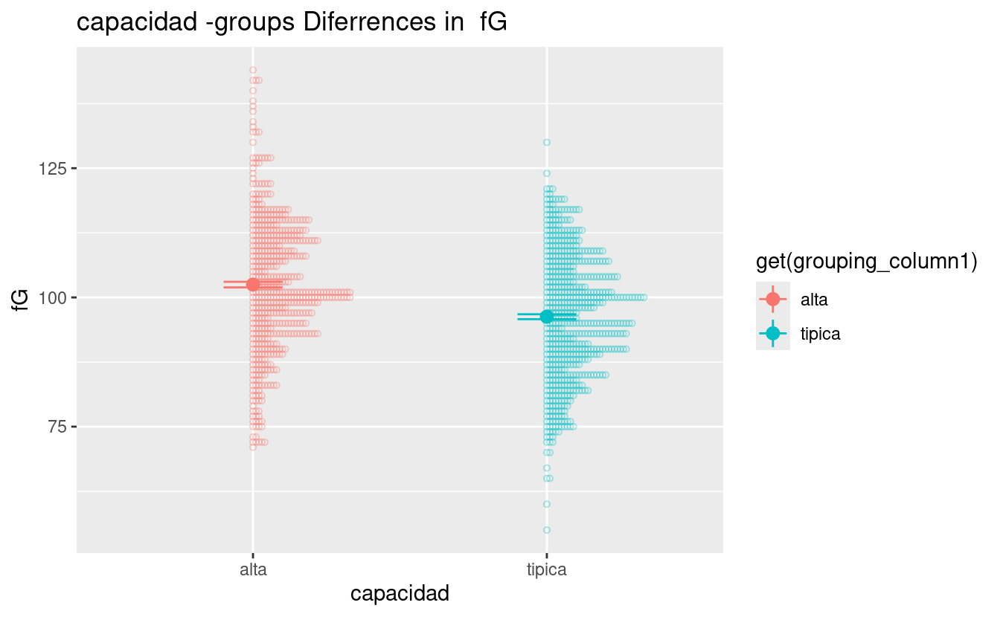
#> [1] "=== DESCRIPTIVE STATS OF fG IN capacidad GROUPS ==="
#> # A tibble: 2 <U+00D7> 4
#> capacidad mean sd num
#> <fct> <dbl> <dbl> <int>
#> 1 alta 102. 12.8 560
#> 2 tipica 96.3 12.1 642
#> [1] "=== GROUP DIFFERENCES GRAPH ==="
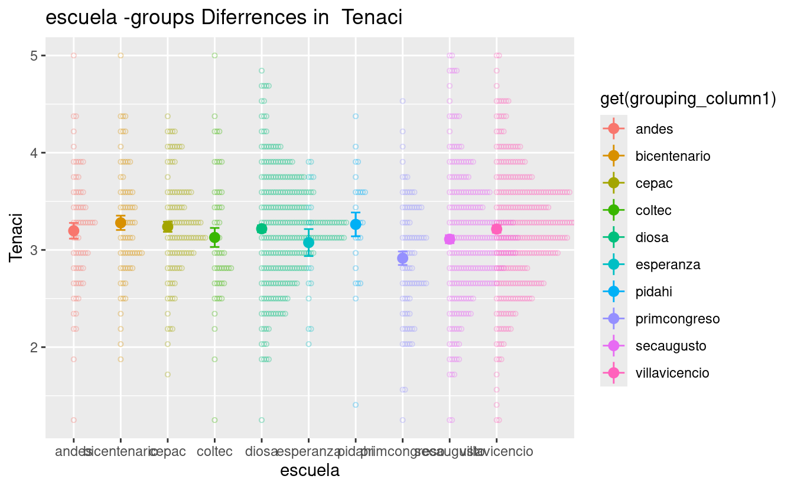
#> [1] "=== DESCRIPTIVE STATS OF Tenaci IN escuela GROUPS ==="
#> # A tibble: 10 <U+00D7> 4
#> escuela mean sd num
#> <fct> <dbl> <dbl> <int>
#> 1 andes 3.20 0.642 63
#> 2 bicentenario 3.28 0.603 67
#> 3 cepac 3.24 0.524 101
#> 4 coltec 3.13 0.686 49
#> 5 diosa 3.22 0.580 265
#> 6 esperanza 3.08 0.605 19
#> 7 pidahi 3.26 0.612 25
#> 8 primcongreso 2.91 0.625 81
#> 9 secaugusto 3.11 0.650 247
#> 10 villavicencio 3.21 0.642 285
#> [1] "=== GROUP DIFFERENCES GRAPH ==="
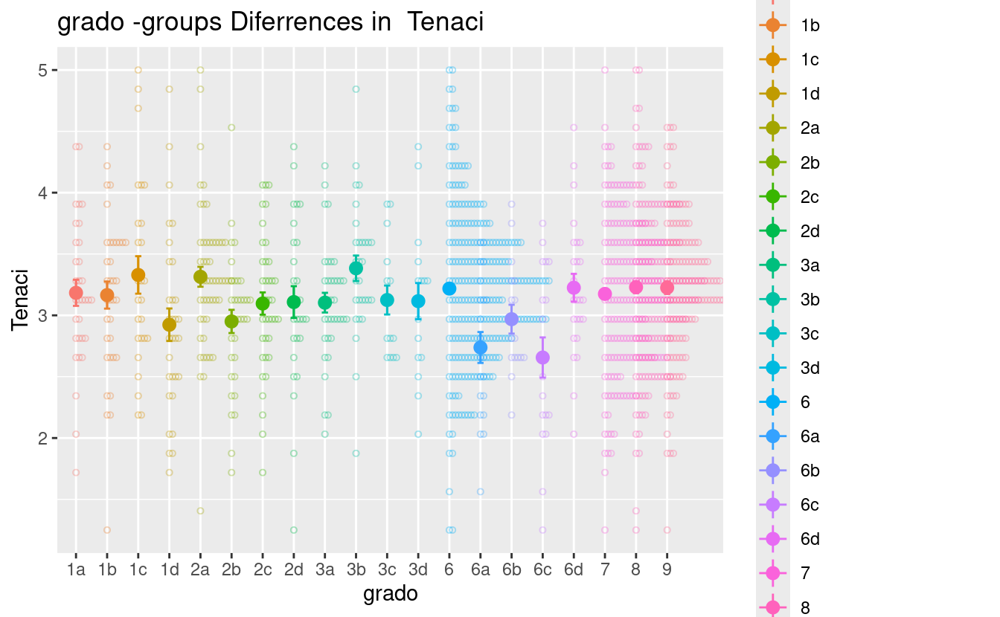
#> [1] "=== DESCRIPTIVE STATS OF Tenaci IN grado GROUPS ==="
#> # A tibble: 20 <U+00D7> 4
#> grado mean sd num
#> <fct> <dbl> <dbl> <int>
#> 1 1a 3.18 0.602 32
#> 2 1b 3.17 0.653 35
#> 3 1c 3.33 0.779 26
#> 4 1d 2.92 0.738 31
#> 5 2a 3.31 0.586 52
#> 6 2b 2.95 0.552 34
#> 7 2c 3.10 0.560 38
#> 8 2d 3.11 0.685 28
#> 9 3a 3.10 0.481 36
#> 10 3b 3.38 0.559 29
#> 11 3c 3.12 0.457 15
#> 12 3d 3.12 0.609 17
#> 13 6 3.22 0.634 252
#> 14 6a 2.74 0.578 21
#> 15 6b 2.97 0.470 16
#> 16 6c 2.66 0.714 19
#> 17 6d 3.22 0.567 25
#> 18 7 3.17 0.605 195
#> 19 8 3.23 0.637 172
#> 20 9 3.23 0.585 129
#> [1] "=== GROUP DIFFERENCES GRAPH ==="
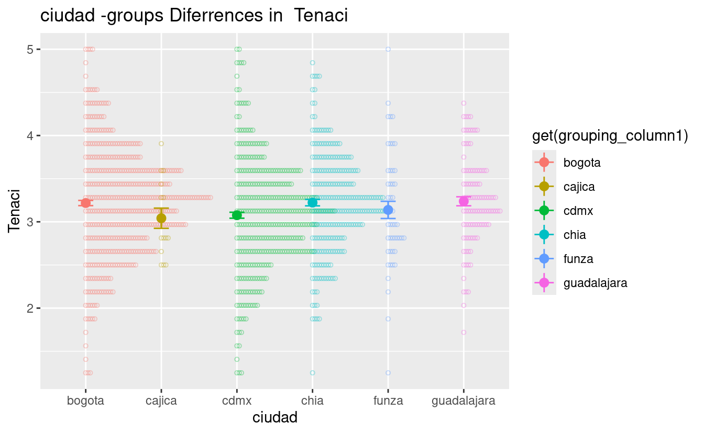
#> [1] "=== DESCRIPTIVE STATS OF Tenaci IN ciudad GROUPS ==="
#> # A tibble: 6 <U+00D7> 4
#> ciudad mean sd num
#> <fct> <dbl> <dbl> <int>
#> 1 bogota 3.22 0.635 443
#> 2 cajica 3.04 0.453 15
#> 3 cdmx 3.08 0.647 353
#> 4 chia 3.22 0.582 242
#> 5 funza 3.14 0.690 48
#> 6 guadalajara 3.24 0.524 101
#> [1] "=== GROUP DIFFERENCES GRAPH ==="
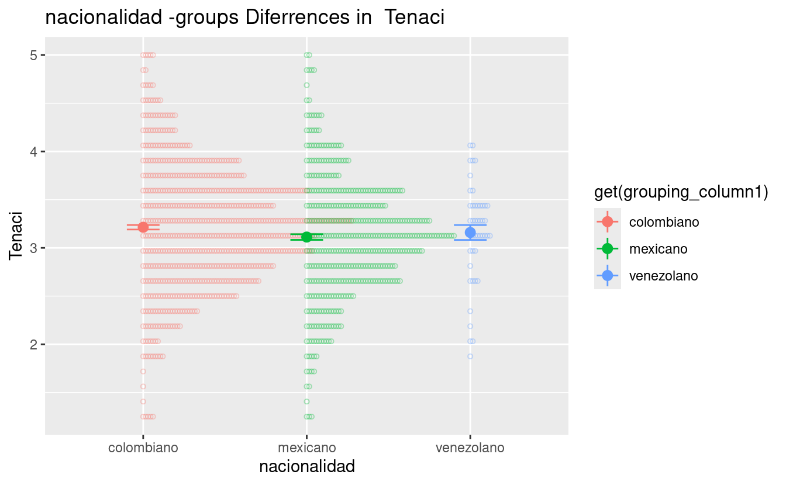
#> [1] "=== DESCRIPTIVE STATS OF Tenaci IN nacionalidad GROUPS ==="
#> # A tibble: 3 <U+00D7> 4
#> nacionalidad mean sd num
#> <fct> <dbl> <dbl> <int>
#> 1 colombiano 3.21 0.624 703
#> 2 mexicano 3.11 0.625 454
#> 3 venezolano 3.16 0.518 45
#> [1] "=== GROUP DIFFERENCES GRAPH ==="
#> [1] "=== DESCRIPTIVE STATS OF Tenaci IN capacidad GROUPS ==="
#> # A tibble: 2 <U+00D7> 4
#> capacidad mean sd num
#> <fct> <dbl> <dbl> <int>
#> 1 alta 3.21 0.618 560
#> 2 tipica 3.14 0.625 642
#> [1] "=== GROUP DIFFERENCES GRAPH ==="
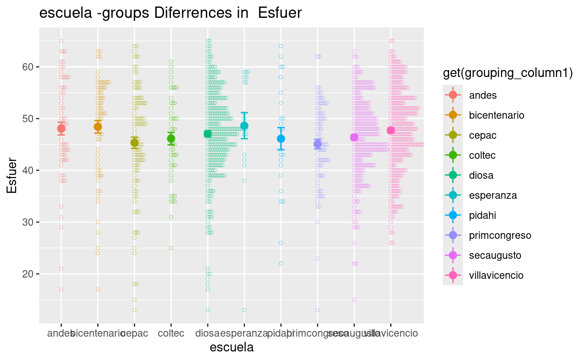
#> [1] "=== DESCRIPTIVE STATS OF Esfuer IN escuela GROUPS ==="
#> # A tibble: 10 <U+00D7> 4
#> escuela mean sd num
#> <fct> <dbl> <dbl> <int>
#> 1 andes 48.1 9.87 63
#> 2 bicentenario 48.4 9.90 67
#> 3 cepac 45.3 10.9 101
#> 4 coltec 46.1 8.37 49
#> 5 diosa 47.0 8.99 265
#> 6 esperanza 48.6 11.0 19
#> 7 pidahi 46.1 10.7 25
#> 8 primcongreso 45.1 8.27 81
#> 9 secaugusto 46.4 7.86 247
#> 10 villavicencio 47.7 8.27 285
#> [1] "=== GROUP DIFFERENCES GRAPH ==="
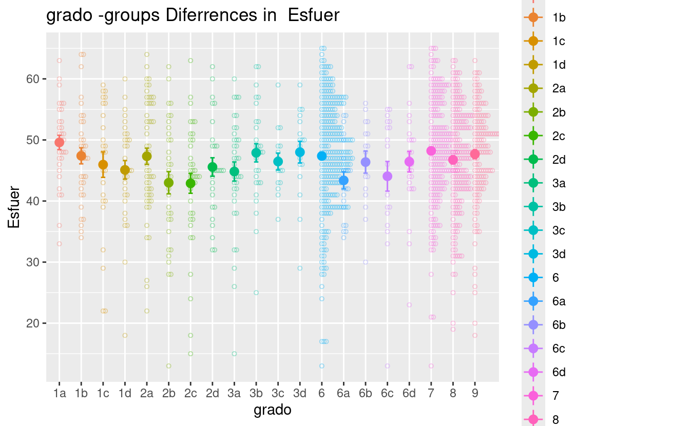
#> [1] "=== DESCRIPTIVE STATS OF Esfuer IN grado GROUPS ==="
#> # A tibble: 20 <U+00D7> 4
#> grado mean sd num
#> <fct> <dbl> <dbl> <int>
#> 1 1a 49.6 6.61 32
#> 2 1b 47.4 7.77 35
#> 3 1c 46.0 10.6 26
#> 4 1d 45.1 8.46 31
#> 5 2a 47.3 9.58 52
#> 6 2b 43 10.7 34
#> 7 2c 42.9 10.0 38
#> 8 2d 45.6 8.02 28
#> 9 3a 44.8 9.42 36
#> 10 3b 47.9 8.09 29
#> 11 3c 46.5 5.37 15
#> 12 3d 48 7.32 17
#> 13 6 47.4 9.27 252
#> 14 6a 43.4 6.41 21
#> 15 6b 46.4 7.23 16
#> 16 6c 44.1 10.6 19
#> 17 6d 46.4 8.39 25
#> 18 7 48.2 8.75 195
#> 19 8 46.7 8.87 172
#> 20 9 47.7 8.37 129
#> [1] "=== GROUP DIFFERENCES GRAPH ==="
#> [1] "=== DESCRIPTIVE STATS OF Esfuer IN ciudad GROUPS ==="
#> # A tibble: 6 <U+00D7> 4
#> ciudad mean sd num
#> <fct> <dbl> <dbl> <int>
#> 1 bogota 47.9 8.86 443
#> 2 cajica 48.5 7.94 15
#> 3 cdmx 46.1 8.18 353
#> 4 chia 46.9 9.08 242
#> 5 funza 46.1 8.45 48
#> 6 guadalajara 45.3 10.9 101
#> [1] "=== GROUP DIFFERENCES GRAPH ==="
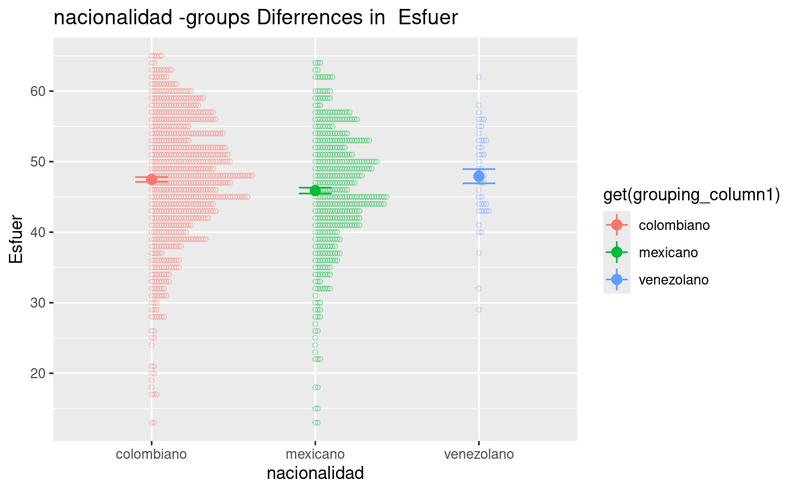
#> [1] "=== DESCRIPTIVE STATS OF Esfuer IN nacionalidad GROUPS ==="
#> # A tibble: 3 <U+00D7> 4
#> nacionalidad mean sd num
#> <fct> <dbl> <dbl> <int>
#> 1 colombiano 47.5 9.01 703
#> 2 mexicano 45.9 8.85 454
#> 3 venezolano 47.9 6.74 45
#> [1] "=== GROUP DIFFERENCES GRAPH ==="
#> [1] "=== DESCRIPTIVE STATS OF Preocu IN escuela GROUPS ==="
#> # A tibble: 10 <U+00D7> 4
#> escuela mean sd num
#> <fct> <dbl> <dbl> <int>
#> 1 andes 63.2 17.6 63
#> 2 bicentenario 60.9 15.3 67
#> 3 cepac 55.6 19.8 101
#> 4 coltec 66.2 14.2 49
#> 5 diosa 64.8 17.0 265
#> 6 esperanza 62.4 17.4 19
#> 7 pidahi 59.4 19.0 25
#> 8 primcongreso 60.5 16.9 81
#> 9 secaugusto 62.6 14.5 247
#> 10 villavicencio 64.0 16.0 285
#> [1] "=== GROUP DIFFERENCES GRAPH ==="
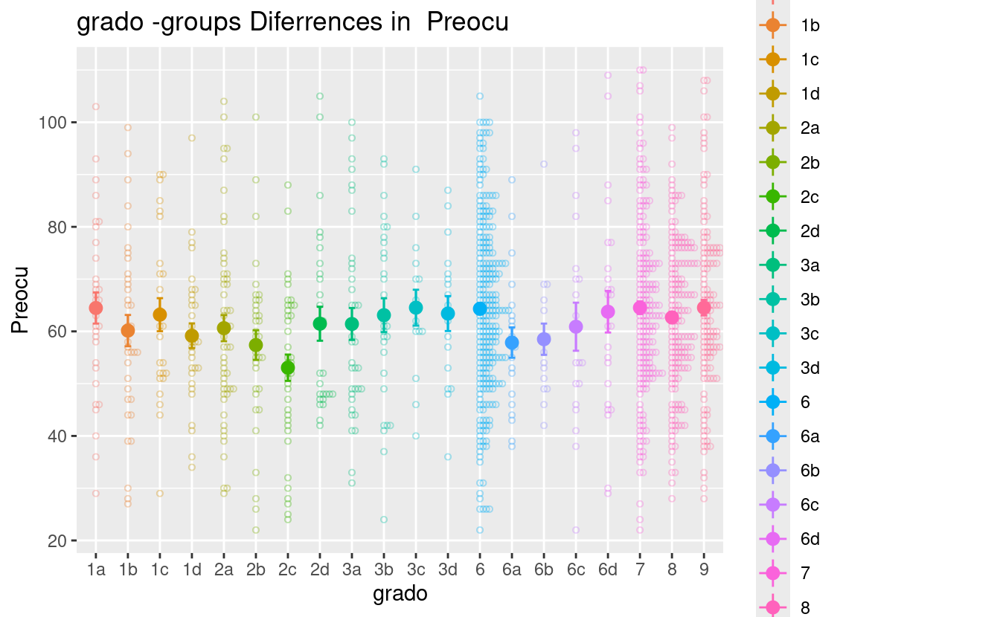
#> [1] "=== DESCRIPTIVE STATS OF Preocu IN grado GROUPS ==="
#> # A tibble: 20 <U+00D7> 4
#> grado mean sd num
#> <fct> <dbl> <dbl> <int>
#> 1 1a 64.5 16.8 32
#> 2 1b 60.1 17.7 35
#> 3 1c 63.2 16.1 26
#> 4 1d 59.2 13.2 31
#> 5 2a 60.6 18.0 52
#> 6 2b 57.4 16.5 34
#> 7 2c 53.1 15.5 38
#> 8 2d 61.5 17.2 28
#> 9 3a 61.4 18.3 36
#> 10 3b 63.1 17.4 29
#> 11 3c 64.5 13.3 15
#> 12 3d 63.4 13.8 17
#> 13 6 64.3 17.0 252
#> 14 6a 57.9 13.3 21
#> 15 6b 58.5 12.0 16
#> 16 6c 60.9 20.0 19
#> 17 6d 63.8 19.9 25
#> 18 7 64.5 16.9 195
#> 19 8 62.7 14.3 172
#> 20 9 64.5 16.9 129
#> [1] "=== GROUP DIFFERENCES GRAPH ==="
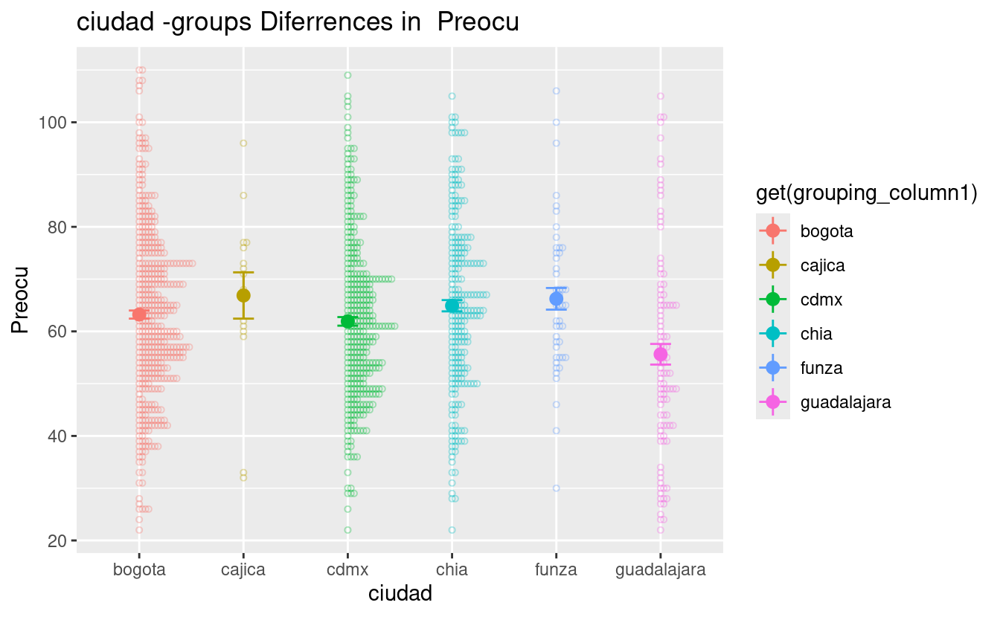
#> [1] "=== DESCRIPTIVE STATS OF Preocu IN ciudad GROUPS ==="
#> # A tibble: 6 <U+00D7> 4
#> ciudad mean sd num
#> <fct> <dbl> <dbl> <int>
#> 1 bogota 63.2 16.3 443
#> 2 cajica 66.9 17.1 15
#> 3 cdmx 61.9 15.4 353
#> 4 chia 64.9 16.8 242
#> 5 funza 66.2 14.4 48
#> 6 guadalajara 55.6 19.8 101
#> [1] "=== GROUP DIFFERENCES GRAPH ==="
#> [1] "=== DESCRIPTIVE STATS OF Preocu IN nacionalidad GROUPS ==="
#> # A tibble: 3 <U+00D7> 4
#> nacionalidad mean sd num
#> <fct> <dbl> <dbl> <int>
#> 1 colombiano 64.2 16.3 703
#> 2 mexicano 60.5 16.7 454
#> 3 venezolano 61.5 17.8 45
categorical_results
#> $fG
#> $fG$escuela
#> xcepac xprimcongreso xsecaugusto
#> 8.453539e-16 6.966841e-03 1.962082e-07
#>
#> $fG$grado
#> x1b x2a x3a x3b x6 x8
#> 0.002125176 0.002636762 0.001098538 0.004825131 0.034494787 0.037487880
#> x9
#> 0.046386617
#>
#> $fG$ciudad
#> xcdmx xguadalajara
#> 6.772918e-11 9.875281e-36
#>
#> $fG$capacidad
#> [1] 2.005137e-17
#>
#>
#> $Tenaci
#> $Tenaci$escuela
#> xprimcongreso
#> 0.006709368
#>
#> $Tenaci$grado
#> x6a x6c
#> 0.009994055 0.003121953
#>
#> $Tenaci$ciudad
#> xcdmx
#> 0.001419448
#>
#> $Tenaci$nacionalidad
#> xmexicano
#> 0.006650907
#>
#> $Tenaci$capacidad
#> [1] 0.04793674
#>
#>
#> $Esfuer
#> $Esfuer$escuela
#> xprimcongreso
#> 0.04431305
#>
#> $Esfuer$grado
#> x1d x2b x2c x3a x6a x6c
#> 0.044021673 0.002543359 0.001648638 0.027042924 0.012576949 0.030856235
#>
#> $Esfuer$ciudad
#> xcdmx xguadalajara
#> 0.003100297 0.008215657
#>
#> $Esfuer$nacionalidad
#> xmexicano
#> 0.003205683
#>
#>
#> $Preocu
#> $Preocu$escuela
#> xcepac
#> 0.004002426
#>
#> $Preocu$grado
#> x2c
#> 0.003962269
#>
#> $Preocu$ciudad
#> xguadalajara
#> 2.899829e-05
#>
#> $Preocu$nacionalidad
#> xmexicano
#> 0.0002189558
CORRELATION ANALYSES
- G
- GRIT
- Esfuerzo
- Preocupacion
Correlation Analisis.
scatterplot_significant_correlations(cormatrixrows, cormatrixrcols, sign=0.05)
#> [1] "Tenaci Esfuer _ r = 0.31817045 _ pval = 0"
#> [1] "fG Preocu _ r = -0.0859733 _ pval = 0.003"
#> [1] "Tenaci Preocu _ r = 0.18849035 _ pval = 0"
#> `geom_smooth()` using formula = 'y ~ x'
#> `geom_smooth()` using formula = 'y ~ x'
#> `geom_smooth()` using formula = 'y ~ x'

#> [[1]]
#>
#> [[2]]
#> [[2]][[1]]
#> `geom_smooth()` using formula = 'y ~ x'
#>
#> [[2]][[2]]
#> `geom_smooth()` using formula = 'y ~ x'
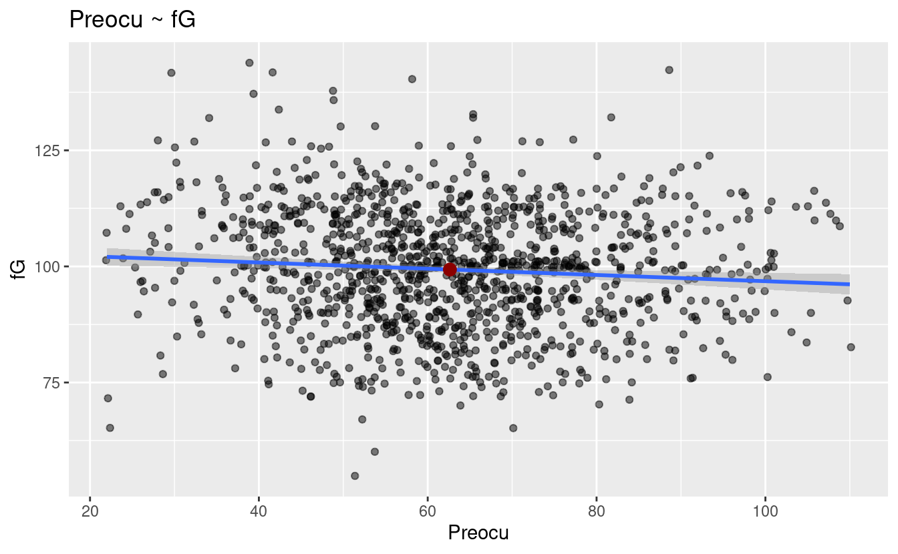
#>
#> [[2]][[3]]
#> `geom_smooth()` using formula = 'y ~ x'